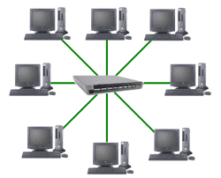

Red Alambirca
Es un tipo de red informática que utiliza cables físicos para conectar dispositivos entre sí y compartir información y recursos. Esta infraestructura física proporciona una base sólida para la comunicación y el intercambio de datos, siendo fundamental para el funcionamiento de diversas organizaciones y entornos.
